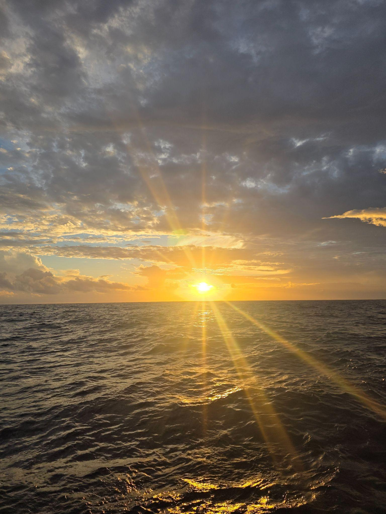

University of South Carolina
Peng Lab in Marine Microbial Ecology
OFP Cruise: BATS Station
October 2025 | Casey Burton

After a quick flight and a skirmish with TSA regarding our liquid nitrogen dewar, I touched down in Bermuda by myself (my PI stayed back with our dewar) and caught a Hitch to the Bermuda Institute of Ocean Sciences (BIOS) research station on St. George. The next few days would prove to be very eventful and exciting. We hit the ground running; firstly we loaded the R/V Atlantic Explorer, our research vessel for the OFP cruise. This ensured that OFP had the necessary materials to complete their mooring recovery and redeployment in regards to their particle flux long-term monitoring project. This required a surprising amount of machinery to accomplish, in addition to coordinating efforts to set up the vessel for the short cruise. After we loaded the ship, we had both safety drills and a ship tour. This was very exciting considering this was my first research cruise. This vessel was equipped with a teaching lab, laminar flow hood, and fume hood, which was extremely helpful and convenient for our sample collection process. During the cruise, OFP activities were in the morning and our BATS casts were largely in the evening and night times, which meant killer sunsets during our fast filtration, DNA-SIP, and microscopy work.

This research cruise was an exceptionally positive experience for both my fellow first-year Ph.D. student Jordan and me. The OFP crew impressed us with their kindness and expertise, introducing us to every aspect of ship life, from practical routines like securing doors and tying down equipment (due to the ship's rocking) to technical tasks such as firing bottles from the bridge for sample collection. The food exceeded our expectations, and the company was even better. Our OFP team included Rut Pedrosa, JC Weber, and Chase Glatz, along with marine technicians Jace and Tyler. We were also joined by fellow guest researchers: Rachel Foster and Tove Seyfrin from Stockholm University and Enrico Piperno from Stanford.
The Sargasso Sea, the entire R/V Atlantic Explorer crew, and our fellow researchers will always have my heart. Truly a first one, best one kind of experience!